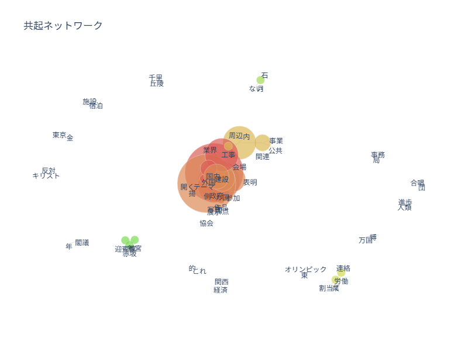
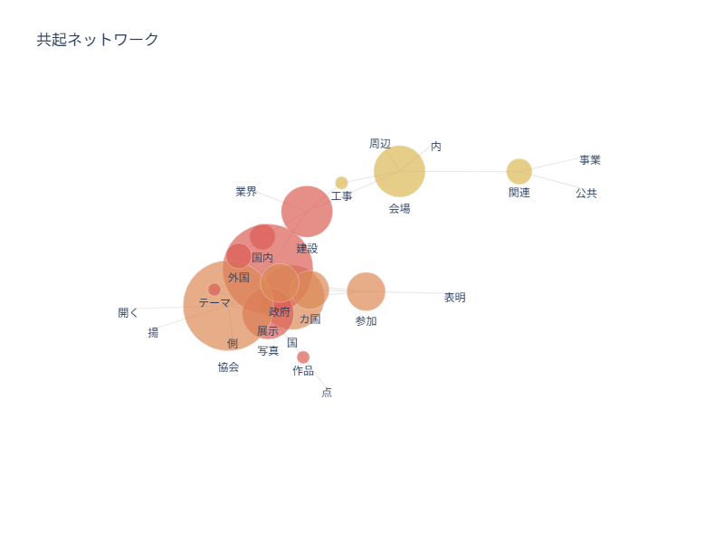
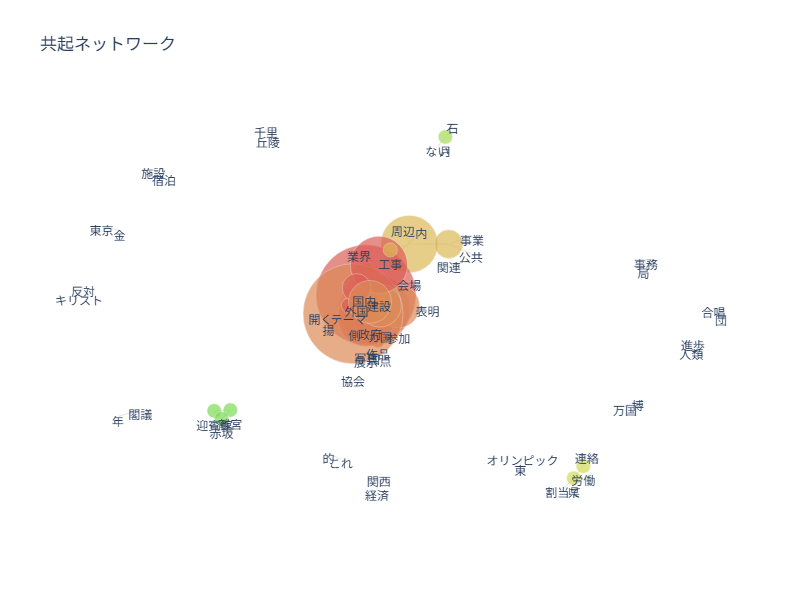
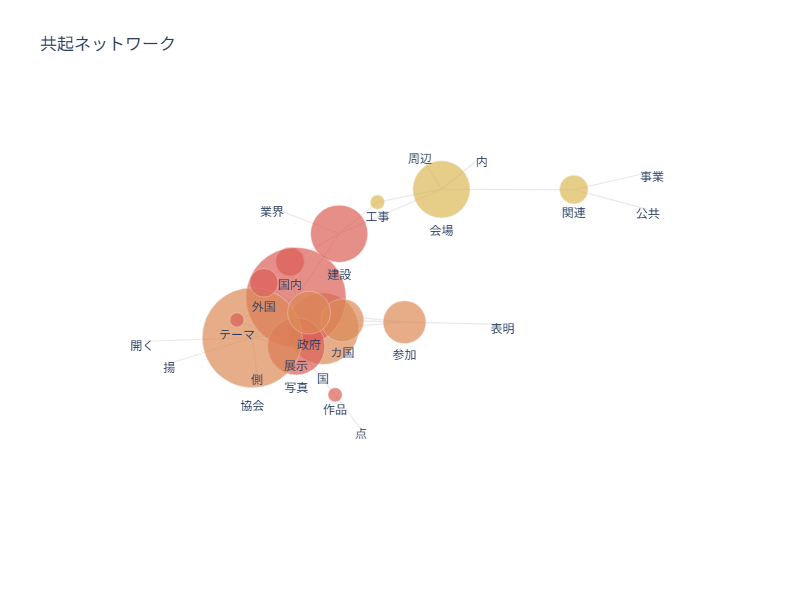
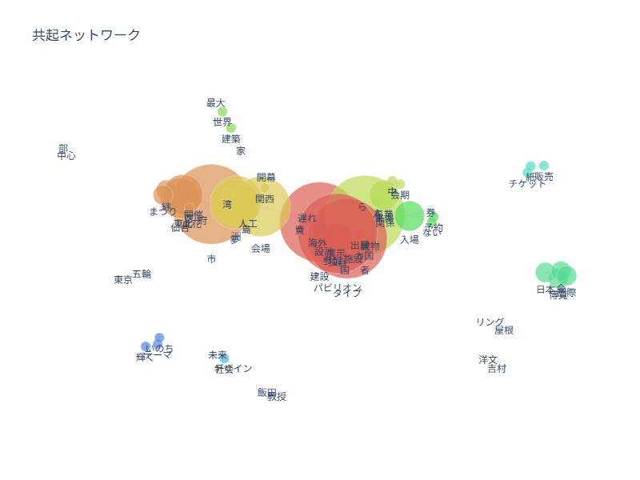
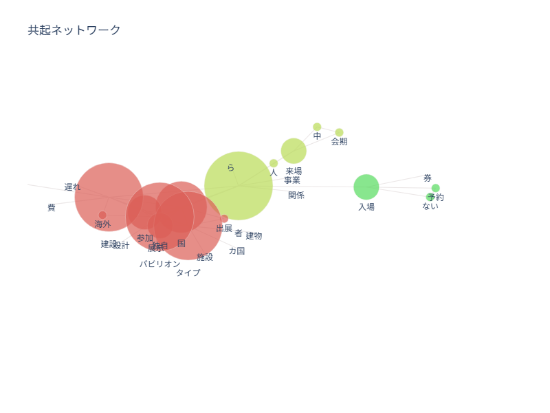
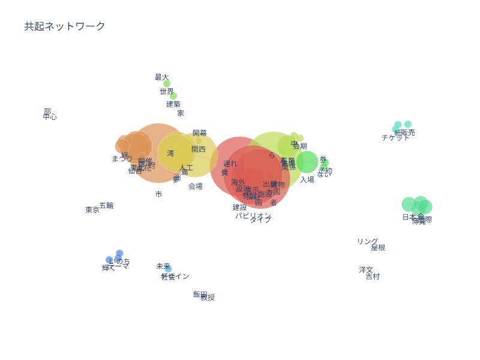
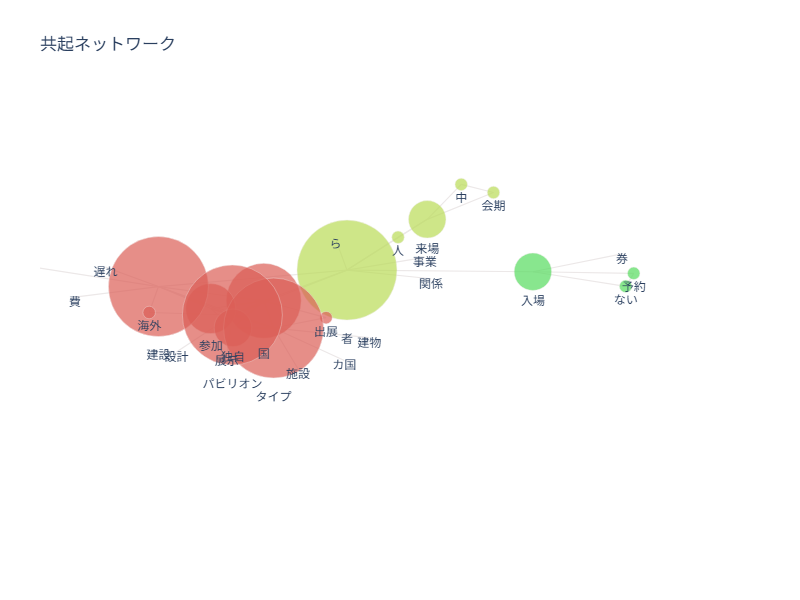

分析内容について
共起ネットワークを用いた分析として、1970年と2025年の大阪万博に関する新聞記事の内容を比較していきます。
対象期間はそれぞれの開催期間のちょうど一年前、1969年の3月15日～9月13日 および2024年の4月13日～10月13日 です。
朝日新聞クロスサーチを利用し、各二万字分ほどの記事を文字データとして入力しました。
対象期間はそれぞれの開催期間のちょうど一年前、
朝日新聞クロスサーチを利用し、各二万字分ほどの記事を文字データとして入力しました。
分析① - 1970年の大阪万博
《実行時の指定変更》除外する頻出上位：10 除外する頻出回数以下：3 除外するエッジのノード数：3

中央部を拡大すると以下のようになります。

主に展示内容や建設工事に関連する単語が多くみられました。

中央部を拡大すると以下のようになります。

主に展示内容や建設工事に関連する単語が多くみられました。
分析② - 2025年の大阪万博
《実行時の指定変更》除外する頻出上位：8 除外する頻出回数以下：4 除外するエッジのノード数：4

中央部の右側を拡大すると以下のようになります。

こちらも展示内容や建設工事に関連する単語が多くみられたほか、入場というワードにも関連性が示されました。

中央部の右側を拡大すると以下のようになります。

こちらも展示内容や建設工事に関連する単語が多くみられたほか、入場というワードにも関連性が示されました。
考察
1970年と2025年、両方の万博に関する記事にはいくつか共通点 がありました。
まず、当然ではあるのですが、その参加国と展示内容については、多くの単語に関連性がありました。万博らしい結果です。
しかし、それと同様に「建設」と「遅れ」の二単語がどちらも繋がって出てきており、変わらない見通しの甘さが示されてしまっています。
一方、両者で全く異なる部分 も見られています。
1970年の方では「月の石」や「合唱団」など、その内容が興味深く書かれているような図ですが、
反対に2025年の方では、「入場券」や「建築家」など、周囲の情報に焦点が当てられているように思えます。
とはいえ、ネガティブなものも含め似ている部分の方が圧倒的に多いので、本質は変わらない なぁと感じました。
まず、当然ではあるのですが、その参加国と展示内容については、多くの単語に関連性がありました。万博らしい結果です。
しかし、それと同様に「建設」と「遅れ」の二単語がどちらも繋がって出てきており、変わらない見通しの甘さが示されてしまっています。
一方、両者で
1970年の方では「月の石」や「合唱団」など、その内容が興味深く書かれているような図ですが、
反対に2025年の方では、「入場券」や「建築家」など、周囲の情報に焦点が当てられているように思えます。
とはいえ、ネガティブなものも含め似ている部分の方が圧倒的に多いので、